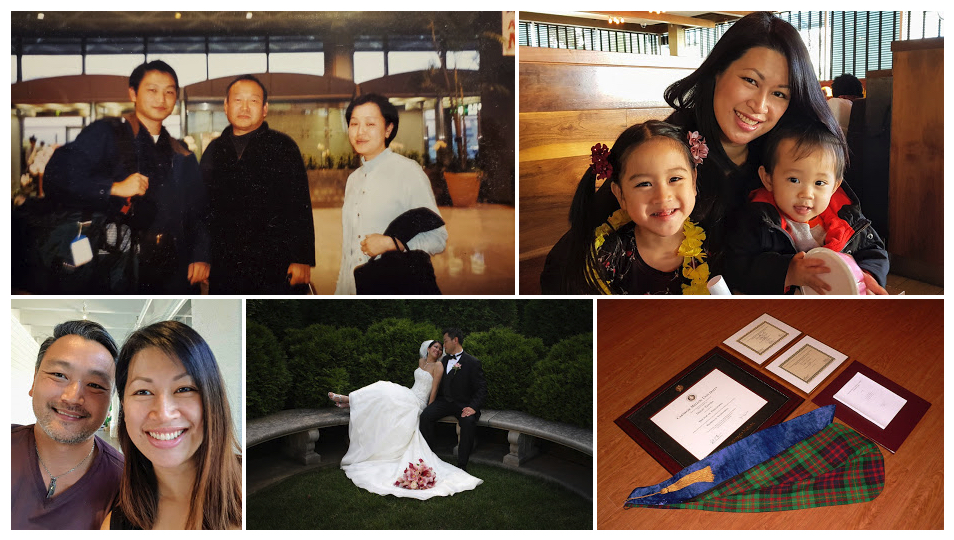
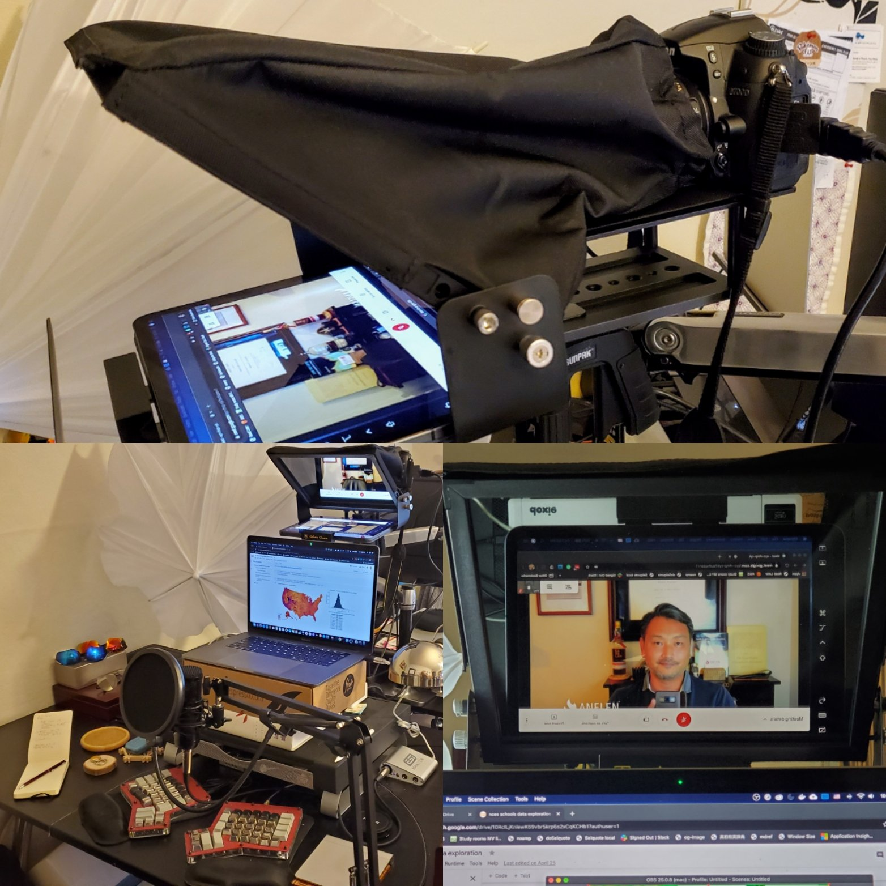
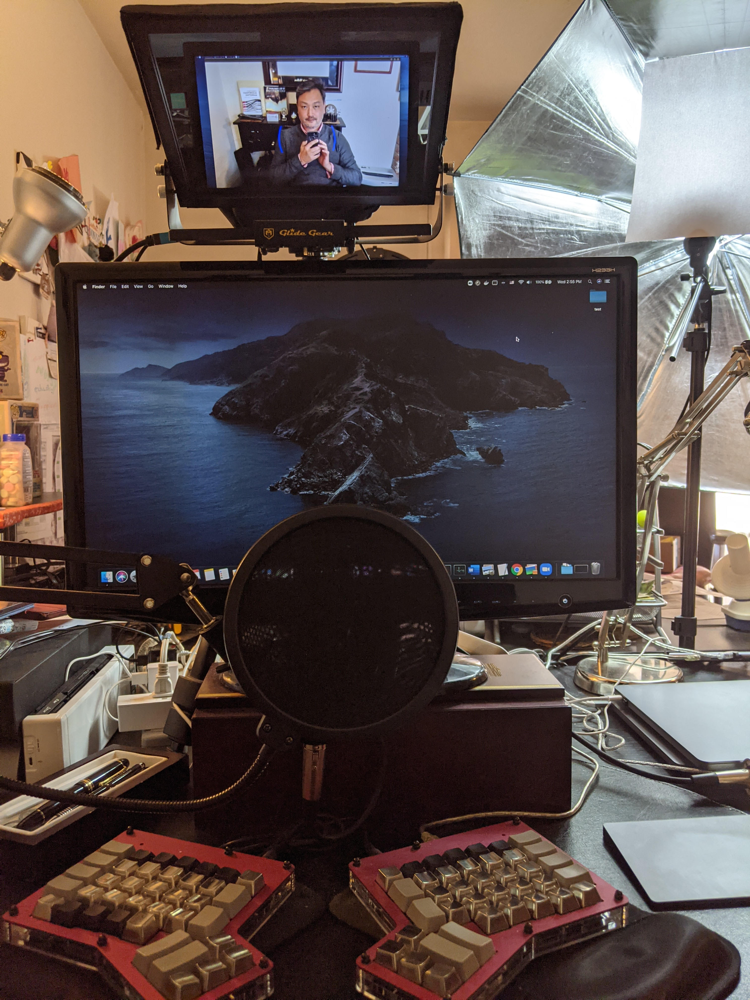
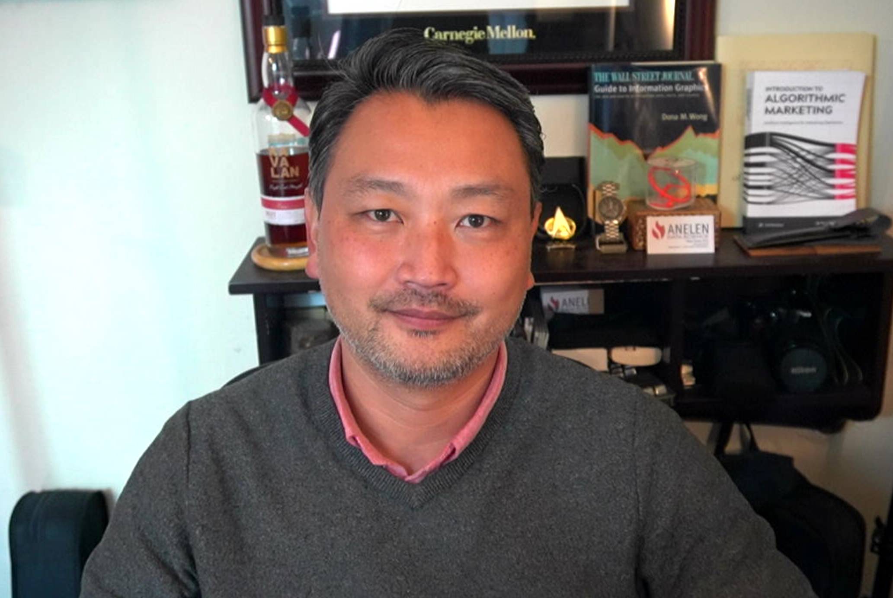

45歳
プログラミングに没頭していて、誕生日日記を書き終えるのが年明け間近になってしまった。 私の経営するANELEN(アネレン) のデータパイプラインサービスを効率的に運営するために作ったツール群をまとめた、 ハンドオフというソフトウェアの最新版の仕上げに掛り切りだった。 幸いバージョン0.3は年内に公開することができ、今ほっと一息ついている。 昨今、各社が様々なオンラインサービスを提供するなか、 利用者の行動によって自動的に生み出されるデータを効率的に抽出、整形して、 大規模データベース収納する、データパイプライン業務が重要度と複雑さを増している。 それを低コスト、高パフォーマンスで実現するソフトウェア・ツールがハンドオフだ。 ハンドオフはANELENのビジネスを支える大事なツールに成長した。 これをオープンソースソフトウェアとして無償公開した。ソフトウェアを売却したり、 ライセンス供与して収入の得るのではなく、ソフトウェアを使ってデータパイプライン サービスを作り、その利用料で継続的な売上を得るというモデルだ。売り切りとは違い、 変化の多い技術をサービスの形で継続的に対応改善するには必須のビジネス形態となるだろう。

20年の積み上げ
2020年は、45歳というある意味40歳よりも重みを持つ年齢になると同時に、 渡米20周年を迎える、味わい深い一年だった。ジョージタウン大学客員研究員として ワシントンDC近郊に降り立った後、カーネギーメロン大学大学院で博士号(Ph.D)をとり、 同大学院で出会った妻のイヴォンヌと結婚、2人の子供に恵まれ、3年半前に起業独立した。 ひとり手ぶらでアメリカに渡ってから20年、個人としては一つの形が出来上がったと思う。 完成という言葉が、感謝の心と共に繰り返し頭に浮かぶ年末である。ありがたい限りだ。
今年は家計的にも一つの大台に乗ることができた。妻と力を合わせ、 それぞれの専門分野で真面目に働き、そこから得た収入を賢く使い、投資をし、 自分たちの力でここまでこれた。感慨深いと同時に一つ考えることがある。 それは、私達の子供が経済的に我々と少し違う環境で育つことになるということだ。 子供はまだ5歳半と2歳半と小さいのでこんな事を今から心配するのも気が早いと言われるかもしれない。 でも彼らが大きくなった時、もし庶民として生きるのに必要な分以上のお金を受け取ったら、 どうなるだろうかと、ふと考えていた。自分の生活に必要なお金を除いた後のお金は、 何らかの形で運用され、社会の何らかの事業を資することになる。 その行き先を決める者の頭一つで更に自分とその周り、そして社会の富が大きくなることもあるし、 無駄になってしまうことだってある。子供らには自由な道を歩ませるが、経済的には賢く育ってほしい。
ひと、お金、マシン
成功という言葉が意味するものも、人生でどれほど成功を期待するかも人それぞれ。 でもこれまで世間で成功したと目される人は人かお金をうまく動かす力を持っていた。 その2つに加えて、これからはマシンを動かす力が物を言う時代だと思う。機械でなく、マシンと表現したのは、 物理的な機械でなく、ソフトウェアの意味合いが強いからだ。 そのソフトウェアにはいわゆる人工知能を利用したアプリケーションも含まれる。 ひと、お金、マシンは意思決定者の決断を大きなスケールで実行して、社会にそれだけ 大きな影響を与える。 労働者の収入が賃金相場と労働時間によって決まるのとは対照して、 対価は与えたインパクトによって決まる。かけた時間は対価とは無関係だし、 与えるインパクトは無限にスケールすると言っても良いかもしれない。
こういうアイディアがこの日記に文字として現れたのは、ナヴァル ラヴィカントという著名な起業家・投資家の言葉が影響しているかもしれない。これを 書いたあと、改めて検索したら、こういうツィートが出てきた。
Earn with your mind, not your time. https://t.co/pmkQ4Fiigd
— Naval (@naval) December 22, 2017
If you’re leveraged with capital, code, or people, and own equity, then good decisions have a much larger earning impact than hard work.
— Naval (@naval) December 20, 2017
つまり「自分の時間を切り売りすることでなく、自分のマインド、知力で稼げ」ということだ。 さらに、「資本、コード(=プログラム、ソフトウェア）、人、もしくは自分の所有する財産といった、 『てこ』を使うと、良い決断のもつインパクトが重労働よりもずっと大きなものとなる」 とラヴィカントは続けている。
同じ視点でプログラマーの勝ち取らなければならない対価についての私のツィート:
スピードはプレミアム機能だ。コードを早く書ける人々は褒賞されるべきであって、割引されたり更に多くの糞な仕事で罰を与えられるのは間違っている。 https://t.co/ejaUm68eg0
— 田中乃悟 (@daigowho) December 11, 2020
仕事が早いが故に割を食うというのは、サラリーマンでプログラマーをしている間は抜けられないトラップ(罠)かもしれない。 有能な人はいかに独立するか、もしくはパートナーとしての扱いをしてくれる会社に転職するかを真剣に考えてほしい。
再びラヴィカント氏の引用をしよう。
Forty hour workweeks are a relic of the Industrial Age. Knowledge workers function like athletes - train and sprint, then rest and reassess.
— Naval (@naval) June 10, 2017
週40時間労働は工業化時代の遺物だ。知的労働者はアスリートのように機能する。 トレーニグを受け、瞬発的に働き、そして休息をとり、状況の再確認をする。
今日に至るまで、この「てこ」の視点を大事に実践するかは「富める者と、それ以外」 を分ける線引きだったかもしれない。しかし、テクノロジーのてこがパワフルになるほど、 「心地よい生活ができる者と、貧する者」という線にどんどん下がってくると思う。 少なくとも今の資本主義形態が続く限りにおいては。これは労働者にとって脅威であるしチャンスでもある。
誰しも何かに長けている
ラヴィカント氏は、(運に頼らず)リッチになる方法というポッドキャストを発表したことでも有名だ。
秋にそれを聴いての感想を綴った。
先日聴いていた長時間ポッドキャスト（下の自己リツィート参照）の中でナヴァルが繰り返していたのは、「誰しも何かに長けている」。このメッセージをふと思い出して考えた。自分が何かに長けているというのは、その何かにどれだけ没頭できるかと深い関係がある。そういう意味で、（続 https://t.co/H8iskrZKDJ
— 田中乃悟 (@daigowho) September 10, 2020
先日聴いていた長時間ポッドキャストの中でナヴァルが繰り返していたのは、 「誰しも何かに長けている」。このメッセージをふと思い出して考えた。 自分が何かに長けているというのは、その何かにどれだけ没頭できるかと深い関係がある。 そういう意味で、十代に損得とかキャリアとか抜きに没頭していた事の中に、 自分が少しでも長けているもののヒントが隠されている場合が多いのではないか、と。 私の場合、中学2年生の時にプログラミングに出会い、 今でも文字通り寝食を忘れてコーディングで完徹してしまう事がある。 コーディングにも色々あって、エレガントなアルゴリズムを発明できるかと言えばそんな天才ではない。 むしろ身近な問題を解決するアプリケーションのコーディングに没頭する。 データ分析をする仕事になって、大量のデータを効率よく安定的に捌くため、 釣り道具やしかけを自分でこしらえるように自分のツールを開発している。 ずっとは疲れるけど、たまに没頭するくらいでないと長続きしないと思う。 誰しも何かに没頭できる。だからキャリアや給料で身の振り方を決める前に、 没頭できることに素直になったら良いと思う。 表面上同じ職種でも、その没頭できる事を意識することで、内発的な持続性が生まれる。 他人と同じ仕事をやっているようで、個性的なアプローチが生まれ、 自分の生態的地位(ニッチ)を見つける可能性が高まる。 その能力が誰かの役に立つのなら食っていける。 没頭できることに素直になりましょう。
没頭したものもう一つ
ここで冒頭の没頭という話にもどるという寸法だ。
新型肺炎の流行で自宅にこもって数ヶ月たった後、没頭していた個人プロジェクトがもう一つある。 オンラインミーティングをしていて気になるのが、スクリーンの相手を覗き込むほど、 視線がカメラからずれ、目と目が合わないということだ。 これをナイアンティックの川島優志氏が、ハーフミラーに映したディスプレイの後ろに ウェブカメラを設置するという方法で解決するデモンストレーションをしていたのを見かけた。
ビデオ会議で目線がバッチリ合う装置をDIYで作ってみたhttps://t.co/4QzHXadoZp
— 川島 優志 masa kawashima (@mask303) May 26, 2020
作ってみたら面白い発見がありました！ pic.twitter.com/PilBFTmo5C
同じアイディアをもう少しお金をかけてきれいに実現していたのが、ファイブスターズの草創期に アドバイザーもしていてくれた起業家・投資家のイヴァン・キリギン氏:
Oh my god, your tweet just made me order Glide Gear. I'm all for experimenting with a remote presence :)
— Daigo (@DaigoTanaka) June 9, 2020
彼はGlide Gear製のテレプロンプターに外部ディスプレイモードにしたiPadを載せ、 カメラもデジタルミラーレスカメラを使って画質も改善していた。テレプロンプターは、 偉い人が演説する時によく使っている、聴衆から目をそらさずに原稿を読むためのハーフミラーを使った装置である。 彼らのアイディアに刺激を受けて、自分もやってみたくなり下の写真のようなセットアップになった。

この写真はまだプロトタイプの段階でキリギン氏のようにiPadを対面モニターとして使い、 ラップトップも含めて設置場所を調整中だったが、最終的には、
など結構経費にものをいわせて、映像と音のクオリティを上げ、使い勝手のよい リモートプレゼンスシステムを作ってしまった。

ズームなどのバーチャル背景は便利だが、今ひとつ安っぽい感じがするので、カメラも ウェブカメラ用にソニーA6100ミラーレスカメラを購入して、 オフィスの背景もプロフェッショナルな雰囲気になるように工夫した。 日々のミーティングではこんな感じでしっかり相手に目を合わせてご挨拶することになる。

他人からは「またくだらないことに時間とお金をかけて」とか「へぇー面白いね」で 終わってしまうかもしれない。でもこういうことに没頭する背景にはずっと深い理由がある。
ニューノーマル。出会いという言葉が持つ意味のイノベーション。
リモートプレゼンスプロジェクトは、コロナ禍で直接人と会えなくなったのがきっかけだったが、 遠隔コミュニケーションのクオリティをいかに高めるかという問題は、 もともと仲良かった友人が遠隔地に散らばってしまった時から、 何年にも渡ってよく考えていたテーマでもあった。いざミーティングをする前の やり取りから会話中のリアリティに至るまでを、普通にカフェで待ち合わせをして、 小さいテーブルを囲んでおしゃべりを楽しむ体験にどこまで近づけられるのかに非常に興味がある。 昔、同じ街の空気を呼吸していた友人と、あの時のような気楽でリアルな会話がしたい。 多くの人がそういう願い持っているだろう。
今年は長女がキンダーガーテンにあがった。義務教育一年目にしてクラスはすべて オンラインだ。幸い娘は幼稚園の最後数ヶ月もオンラインだったし、新しい担任の先生は コンピューターを使い慣れている方だったので、オンライン授業も大方スムーズに流れてほっとしている。 長女も新しいクラスメイトの名前をすっかり覚えて、休み時間にはスクリーン越しに おしゃべりを楽しんだりしている。自分のこども時代とはまったく違う就学体験をしている娘を目にし、 彼女らにとって人と出会うということの意味は、自分たちのものとは違ったものになるのではないかと考えた。 隔離している今が一時的にそうしている面もあるが、 長期的にもデジタルに出会う人の数の方が大きくなると私は予感している。 ひょっとすると数だけでなく、出会いの意味の深さもデジタルが凌駕するかもしれない。
今年は昔のスタートレックやExpanseといった現代SFシリーズの視聴を家に閉じこもって楽しんでいる。 この世界での船外コミュニケーションは非同期通信が大きなシェアを占めているだろう。 宇宙大航海時代に出会いという言葉はどういう意味をもつことになるのか?
新しい形の出会い。新しいチャンス。
私のビジネス、仕事が始まった後はすべてリモートだが、人間関係構築を重視して、 営業はこれまで対面で行っていた。今春、コロナの影響で複数のクライアントが去る中、 その営業がまったくできない状況となり、少し不安になった。どうしたら将来のビジネスにつながるような、 新しい出会いをし、関係を深めることができるのか。完全オンラインで。よく考えた結果、 2つのことを実践にうつした。一つ目は、自分のビジネスに役立っているソフトウェアを 他人にも使ってもらえるよう整備し、オープンソースで無償公開すること。2つ目は、 スラックなどで同じテーマに興味をもっているコミュニテイに参加して、困っている人を助けることだ。
利益をよそにして、人に役立つこと積み重ねることで、信頼とレピュテーション(評判)が生まれる。 その2つこそ、来るところから新しい仕事をもらえる大事な礎だ。実際に半年間で、 大小のソフトウェアを3つから5つほど公開し、それぞれに初期ユーザがついてくれた。 そこから生まれるオンラインの会話は同じ問題に興味をもっている者同士の深いものとなり、 どこぞのビジネスカンファレンスにお金を払って交わす表面的な会話よりも何倍も確実に、 スピーディーに関係を構築するのに役立った。しかも米国、日本はおろか、ネパール、 ブラジルといった世界のどこからでも声がかかるのだ。
そんな中から、10月には新しい長期プロジェクトを受けることになり、ANELENの データパイプラインサービスの第一の顧客からも2021年の契約更新と売上拡大を 勝ち取ることができた。結果、意外にも2020年はこれまでで経済的に一番成長した年となった。
これはネットワーク化社会の本質とも言えるのだが、ますます個が光る時代、 個が世界全体を相手にできる時代だ。そこでよく考えたいのは、 何百万の人にフォローされているスーパースターでなくても十分にやっていけるということだ。 まさにラヴィカント氏のいう「誰しも何かに長けている」という信条がもてるかにかかっている。 そして自分が何かに長けているというのは、その何かにどれだけ没頭できるかと深い関係がある。 没頭できるということは、人にも面白いと思ってもらえる事への第一歩。 その没頭していることが世界の誰かの役にも立つのなら食っていける。
没頭し、根を詰めてしばらくたち消耗してくると、こんなことに時間を使っていていいのか、 もっと大事なこと、やるべきことがあるだろう、と焦燥感にかられることもしばしば。
でもこれでいいんだ、没頭することに素直になろう、それが45歳の自分へのメッセージ。
これまでの誕生日日記：